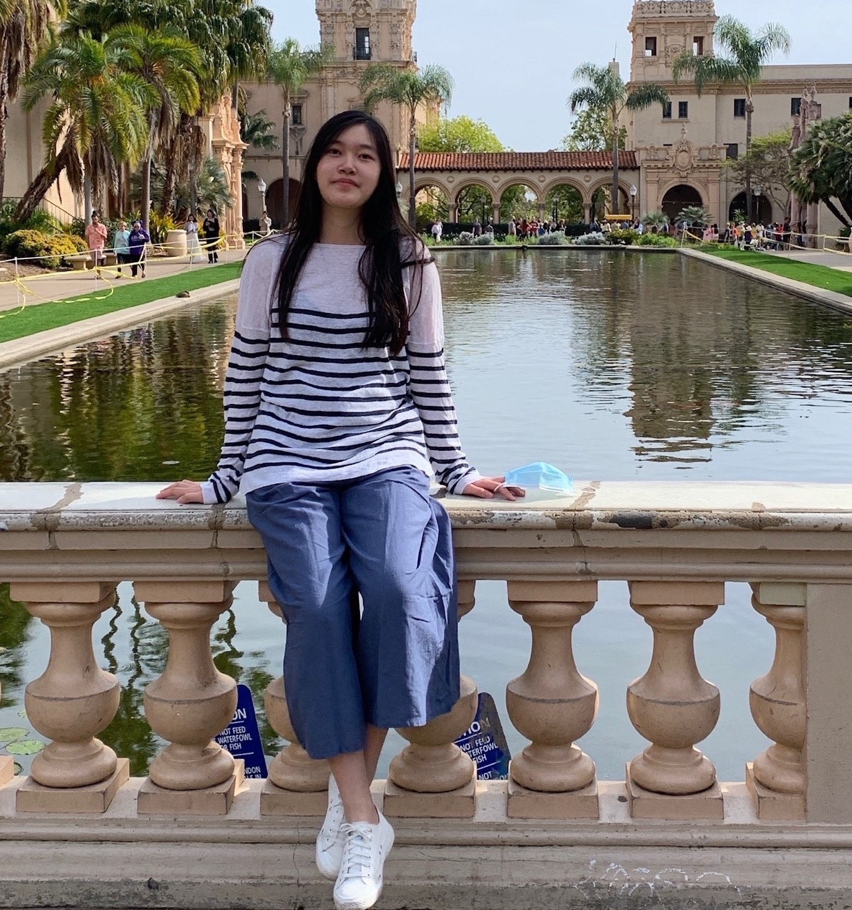

Chujun Lin, Lab Director
Chujun Lin, Lab Director
Chujun joined the Department of Psychology at UCSD as an assistant professor in July 2023. She obtained her Ph.D. in social science at the California Institute of Technology in 2019, and completed her postdoctoral training in social psychology at Dartmouth College in 2023. Chujun's work focuses on how people infer others’ enduring traits via both dubious shortcuts (e.g. faces) and meaningful signals (e.g., emotions), and how biases in these trait inferences impact consequential real-world decisions (e.g., in politics, media, and science). When not science-ing, Chujun enjoys rock climbing, hiking, and singing.
[CV] [Email] [Twitter]
Ruoying Zheng, Grad Student
Ruoying is an incoming Ph.D. student in the Department of Psychology at UCSD. She earned her Master's degree in Psychology from Sun Yat-sen University. Her research interest lies in understanding how people form first impressions of others via faces and how this process is influenced by motion cues and social context. Beyond academia, Ruoying enjoys writing, hiking, and photography.
[CV] [Email] [Website]
Junsong Lu, Grad Student
Junsong is an incoming Ph.D. student in the Department of Psychology at UCSD. He holds a Master's degree in Applied Psychology from the Chinese University of Hong Kong, Shenzhen. His research interests lie in understanding how individuals' judgments and impressions of others are shaped by various social and non-social cues, spanning from instantaneous information to broader socio-cultural shifts. In his leisure time, Junsong takes pleasure in practicing Chinese martial arts and delving into the rich world of philosophy.
[CV] [Email] [Website]
Yilin Wang, Visiting Grad Student
Yilin is currently a fourth-year Ph.D. student at the Institute of Psychology, Chinese Academy of Sciences, focusing her studies on Big Data Psychology. She completed her Bachelor's degree in Applied Psychology at Nankai University. Her research primarily explores the utilization of social media data to uncover users' psychological characteristics and to investigate the expression and propagation of stereotypes. Her approach blends computational techniques with traditional psychological methods, aiming to contribute to a deeper understanding of these phenomena. Outside of her academic pursuits, Yilin has a passion for reading, playing the piano, and engaging in sports.
[Email]
Ceyla Iseri, Undergrad Research Assistant
Ceyla is a fourth-year Psychology (B.S.) major at UC San Diego. Interested in different Psychology topics, she is excited to focus on how people form impressions of each other in real-life and online settings, especially in relation to politics and societal outcomes. Beyond her studies, Ceyla enjoys learning about cultures and countries, reading, and trying new food.
[Email]
Jiabin Zou, Undergrad Research Assistant
Jiabin is a third-year undergraduate student majoring in Psychology B.S. at UCSD. Her research interests lie in understanding factors and mechanisms behind social interactions, identifying and resolving cognitive biases, and cultural influences behind social perceptions. In her free time, she enjoys pop music, baking, and language learning.
[Email]
Megan Puckett, Undergrad Research Assistant
Megan is an undergraduate student at UCSD studying cognitive and behavioral neuroscience. Her research interests lie in understanding how first impressions are formed through trait recognition/evaluation in facial features, along with analyzing the Prototype Theory. In her free time, she enjoys dancing, reading, and baking.
[Email]
Yufei Mao, Undergrad Research Assistant
Hi, this is Yufei Mao, an undergraduate double majoring in General Psychology and Cognitive Science. I am genuinely interested in exploring the complexity of the human mind and behavior. As a potential researcher eager to delve deeper into this field, I seek to apply computational models to abstract psychological concepts.
[Email]
Turner Lin Halaska, Lab Mascot
Turner is a 6-year-old full-time German Shorthaired Pointer, who alternates between "Velcro" and "Hunter". Turner obtained his Ph.D. (Pretty happy Dog) degree from Good Dogma Canine Rehabilitation and Training Center in New Hampshire in 2022. He is interested in applying state-of-the-art computational models to predict the motions of furry and feathery creatures. Outside of science, Turner enjoys hiking, sniffing, delicious treats, and swimming - he held several impressive records of swimming across the Connecticut River between New Hampshire and Vermont for his favorite chicken coops.
Collaborators
Ralph Adolphs, California Insitute of Technology
Mark Thornton, Dartmouth College
Umit Keles, California Insitute of Technology
Shuo Wang, Washington University in St. Louis
Runnan Cao, West Virginia University
Piotr Winkielman, University of California, San Diego
Yue Xu, California Insitute of Technology
Yilin Wang, Chinese Academy of Science
Julia Folz, Leiden University
Hongbo Yu, University of California Santa Barbara
Xin Li, West Virginia University
Julian McAuley, University of California, San Diego
Michael Alvarez, California Insitute of Technology